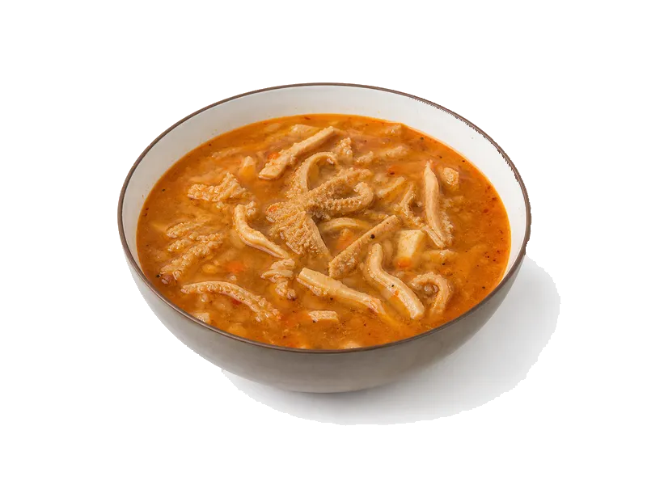

Zupy
Flaki
Flaki: 11 g białka, 82 kcal, 3 g węglowodanów i 3.5 g tłuszczu na 100 g. Kategoria: Zupy.
Kalorie82 kcalna 100 g
Białko / proteiny11 g
Węglowodany3 g
Tłuszcz3.5 g
Cena (szac.)~1,34 złza 100 g
Ceny zaktualizowano: maj 2026 (szacunek — ceny w popularnych supermarketach)
Porcja: miska (350g)
| Kalorie | 287 kcal |
|---|---|
| Białko | 38.5 g |
| Węglowodany | 10.5 g |
| Tłuszcz | 12.3 g |
| Cena (szac.) | ~4,69 zł |
Szczegółowe składniki odżywcze na 100 g
| Wartość energetyczna (kalorie) | 82 kcal |
|---|---|
| Białko (proteiny) | 11 g |
| Węglowodany | 3 g |
| Tłuszcz | 3.5 g |
| Tłuszcze nasycone | 1.5 g |
| Tłuszcze nienasycone | 2 g |
| Witaminy i minerały (skrót) | Witamina A, Witamina C, Potas |
| Współczynnik kcal / 1 g białka | 7.5 |
| Cena produktu (szac. za 100 g) | ~1,34 zł |
| Cena za 100 g białka (szac.) | ~12,18 zł |
Witaminy i minerały na 100 g
Ilość w 100 g produktu oraz orientacyjny % dziennego zapotrzebowania (RDA) dla dorosłej osoby. Żelazo wg normy dla kobiet; sód jako % limitu. Wartości typowe (USDA / tabele żywieniowe / etykiety) — mogą się różnić między markami.
-
Witamina A 50 µg
-
Witamina C 5 mg
-
Witamina B1 (tiamina) 0.05 mg
-
Wapń 25 mg
-
Żelazo 0.5 mg
-
Magnez 12 mg
-
Fosfor 40 mg
-
Potas 180 mg
-
Cynk 0.3 mg
-
Selen 2 µg
-
Miedź 40 µg
-
Sód 380 mg